Taking the best of your colleague's leave app
I went through your colleague's app screen by screen and put it beside our Leave War. Four of its ideas are about a member's own leave, and that's this round. A second reviewer checked the questions against your earlier rulings before you see them. Every picture of ours is the real app, with a member's leave set up through its own buttons (Ranger: 19–21 Jan approved, 26–27 Jan waiting, 2 Feb refused, the clock held at 8 Jan); the new parts are drawn in and marked in pink. Their app is shown running on made-up people (its squadron name replaced). Tap any picture to enlarge it.
The two apps, as they are today
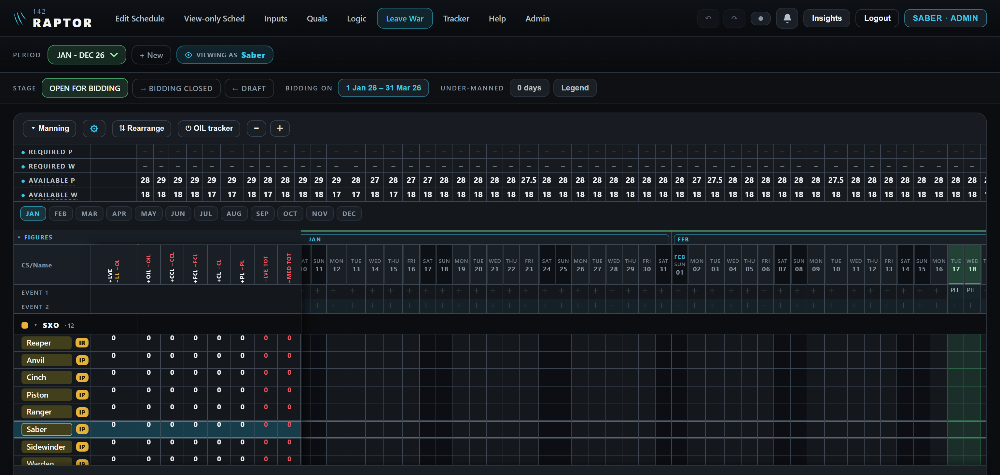
The year grid, the manning rows, every person's figures.
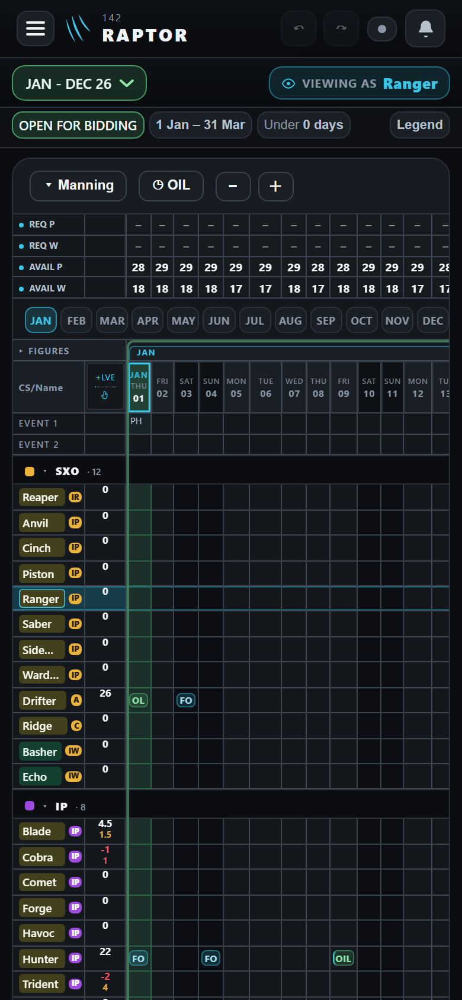
Ranger has to find his own row to see anything of his.
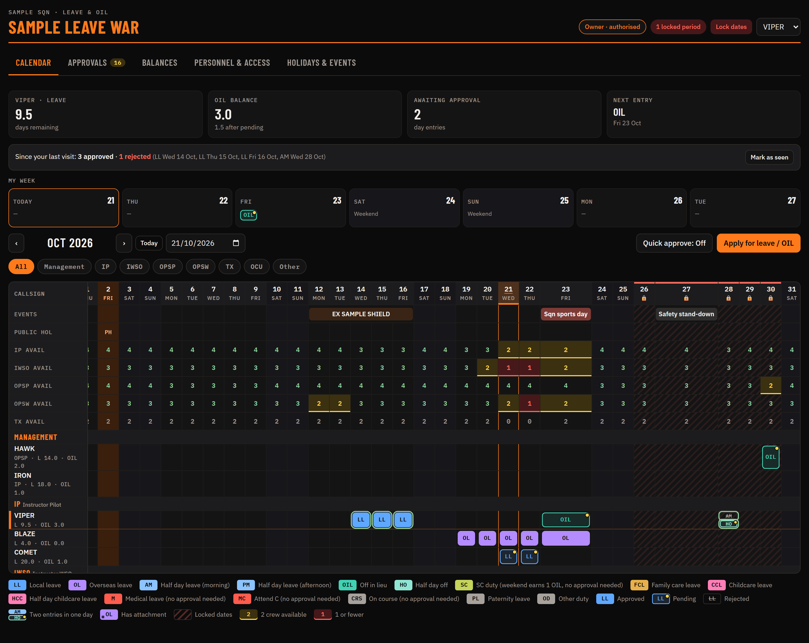
His own numbers, "since your last visit", his week, one month at a time.
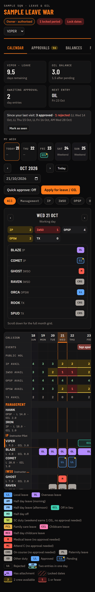
The same, then a panel for one day, then the month.

Every waiting request in one list (that one is round 2).
Should a member see "My leave" in one line at the top of the Leave War?
Today Ranger's numbers sit in his row of the grid ("15" over "5"), and nothing lists his own requests. Theirs puts his numbers first (box 1 in their picture). His "15" already takes off the two days still waiting, as the grid's does.
This changes your earlier rulings on the top of the Leave War: a phone's top is two lines (D678, D1000), a desktop's stays as it is (D679), and the "Viewing as" button keeps its words (D365).
- A · One linerecommended
"My leave · LVE 15 · OIL 0 · 2 waiting · next LL 19 Jan ›". A tap opens his own leave, one line a request, each marked approved, waiting or refused; a tap on one takes the grid there. You see your own the same way. On a phone it is a third line under the two; on a desktop it fits in the free end of the stage row, so no new line there. - B · No new line, even on a phone
The "Viewing as" button carries his numbers when it is himself: "Ranger · LVE 15 · 2 waiting ›". No height, but the button's words change with who you view, and "next leave" doesn't fit. - C · Leave it as it is
Example: Ranger opens the Leave War on his phone on 8 Jan. Without scrolling he sees he has 15 days left, two days waiting, and his next leave is 19 Jan. He taps the line and sees 19–21 Jan approved, 26–27 Jan waiting, 2 Feb refused.

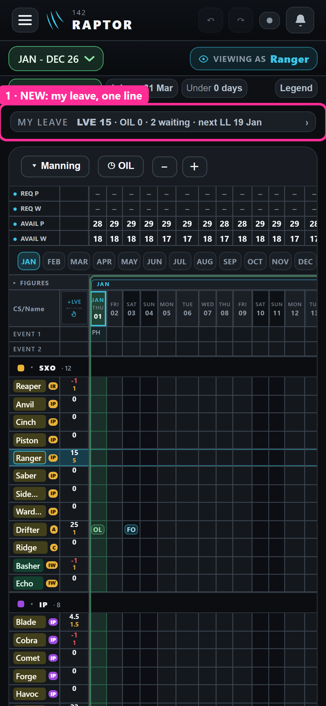
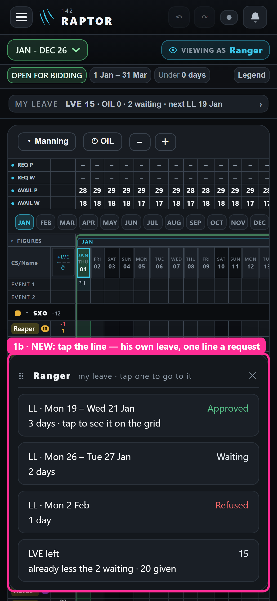
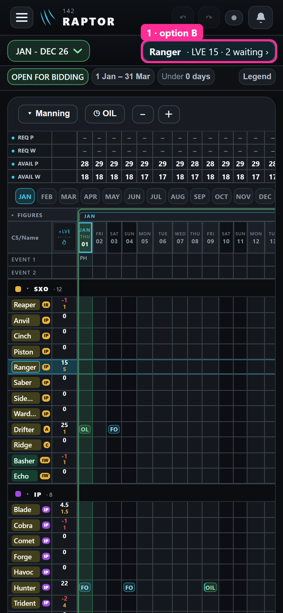
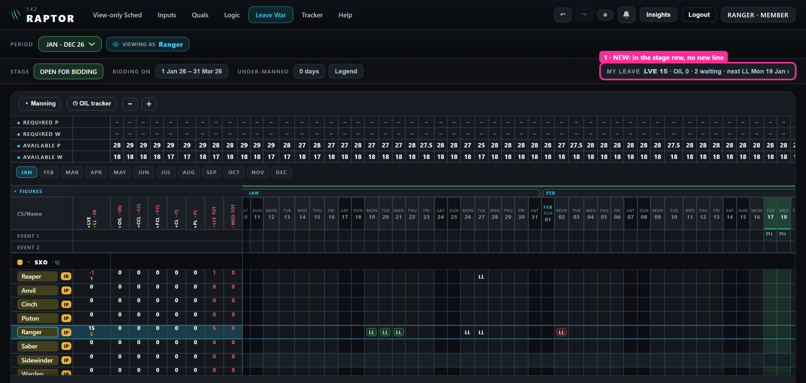
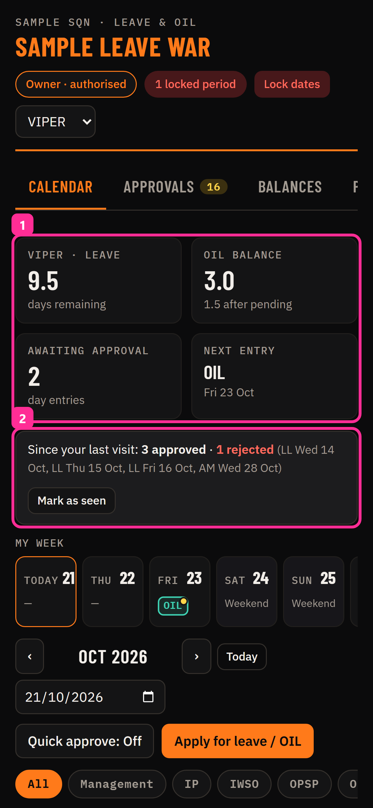
How should a member be told his leave was approved or refused?
Today, when you approve or refuse his bid, nothing tells him. The bell stays quiet, so he only finds out if he spots his cell change colour. Theirs shows "Since your last visit: 3 approved · 1 rejected" (box 2 in their picture).
- A · The bellrecommended
One line per decision, naming who made it, as every bell line does: "Your leave · Mon 19 – Wed 21 Jan · LL approved · Saber". Tapping it takes the grid there. It tells him when his bid is approved or refused, when approved leave is put back to a bid, moved or deleted, and when another input replaced his bid. It doesn't tell him about an Ack, which only means "seen". Days decided together make one line, not three. - B · A line on the Leave War itself, as theirs, with "Mark as seen". If you pick 1A, it would sit inside that line.
- C · Both
Example: Saber approves Ranger's 19–21 Jan and refuses his 2 Feb. His bell shows two lines. He taps the first and the war scrolls to 19 Jan. The refused day stays on the grid in red, as it does today.
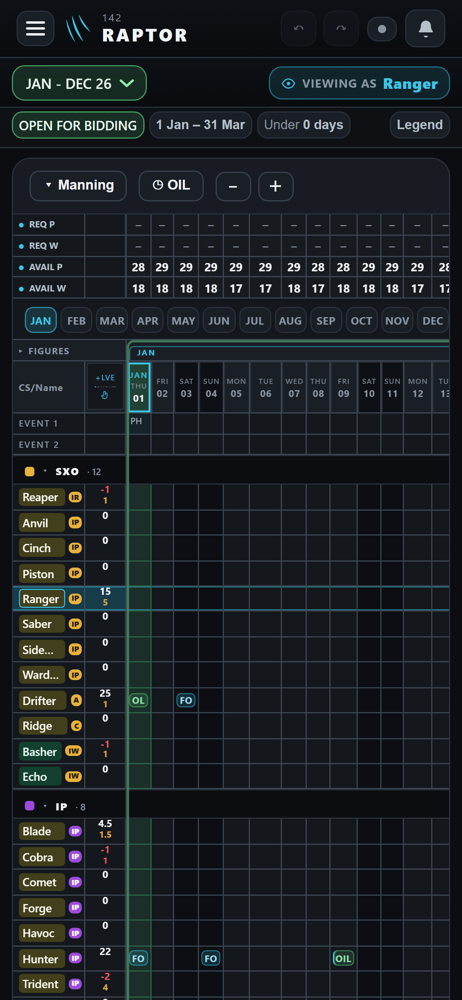
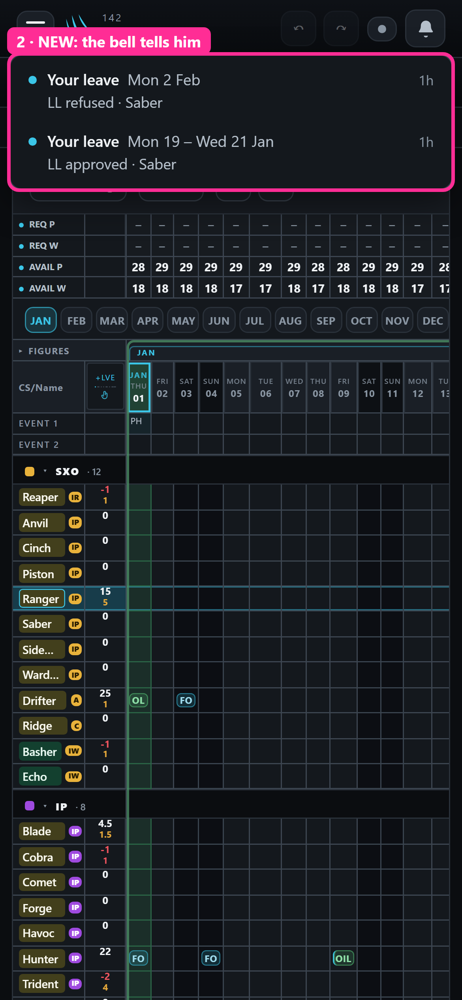
Should tapping a date open that day: who is away, and the day's numbers?
Today there's only the year grid. To see who is off on a day you scan a column of fifty rows. Theirs has a panel for one day on the phone.
- A · On a phone and a desktoprecommended
Tap a date's heading: that day rises from the foot of the screen, the same kind of panel as the Inputs and SANS calendars' day. It shows ‹ day ›, the day's numbers (Available P and W, and any manning row of yours with its amber or red), and who is away with his leave's letters and whether it's approved or waiting. That's only what the grid already shows him, never a remark. - B · A phone only
- C · Leave it as it is
Example: Ranger wonders about Tue 27 Jan. He taps "TUE 27". The panel shows Avail P 25, Avail W 17, and that Reaper, Drifter and Basher have bid LL that day too, all waiting.
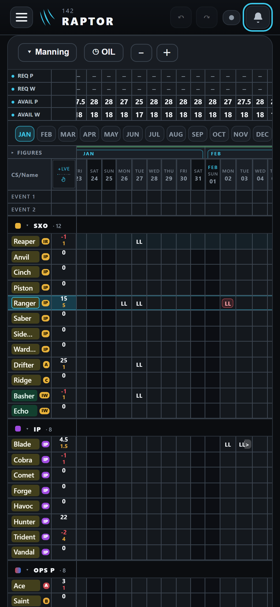
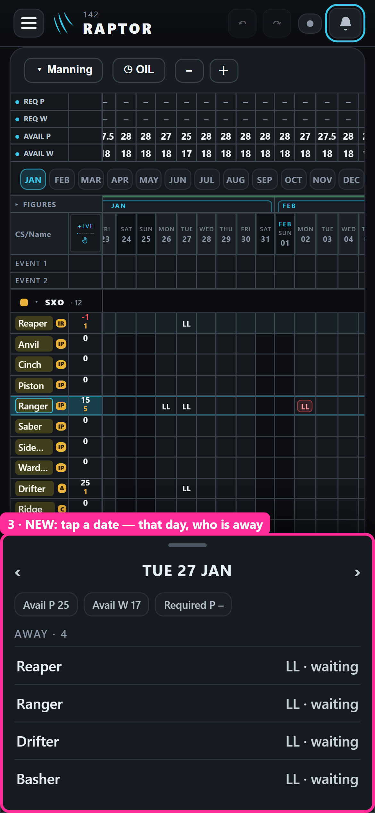
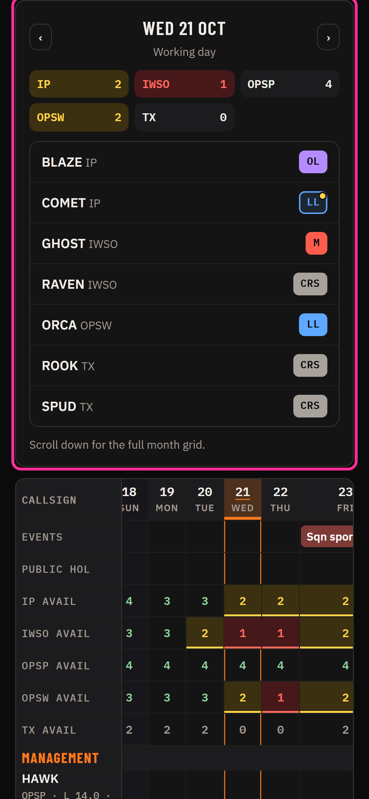
How should a member see what a bid will cost?
Ours places the bid the moment he taps a leave type. Each type draws on a different balance: LL and OL on his LVE, OIL on his OIL, CCL on its own, and a weekend or holiday takes nothing. So one cost line can't be right before he picks. Theirs shows it under a form with a Submit button. Both of our bid windows (one day, and a dragged block) would change alike, and the "tap again" check before a balance goes below zero stays.
- A · What's left, on each leave buttonrecommended
"LL 15 · OL 15 · OIL 0 · CCL 0 …", plus one line at the top for the day: "Wed 28 Jan · Avail P 28 → 27 if you bid", naming any manning row of yours that would turn amber or red. Still one tap to bid. - B · Pick, then confirm
The type lights up, a line says what it takes ("LL Wed 28 Jan: LVE 15 → 14"), and "Place bid" places it. One more tap on every bid. - C · Leave it as it is
Example, a range over a weekend: Ranger picks Fri 30 Jan – Mon 2 Feb and taps LL. Friday and Monday take 1 each; Saturday and Sunday take nothing. His LVE goes from 15 to 13.
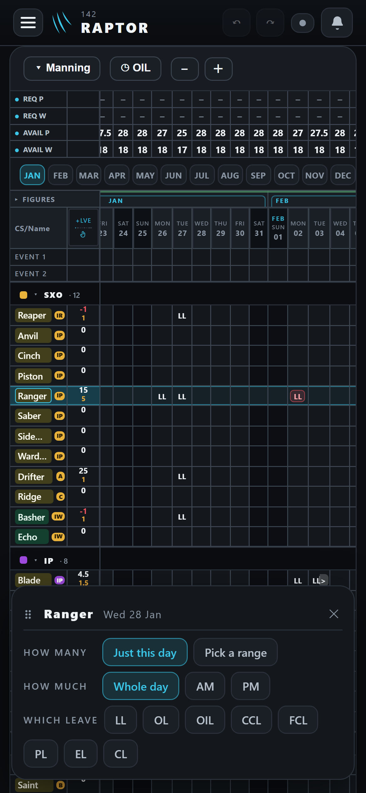
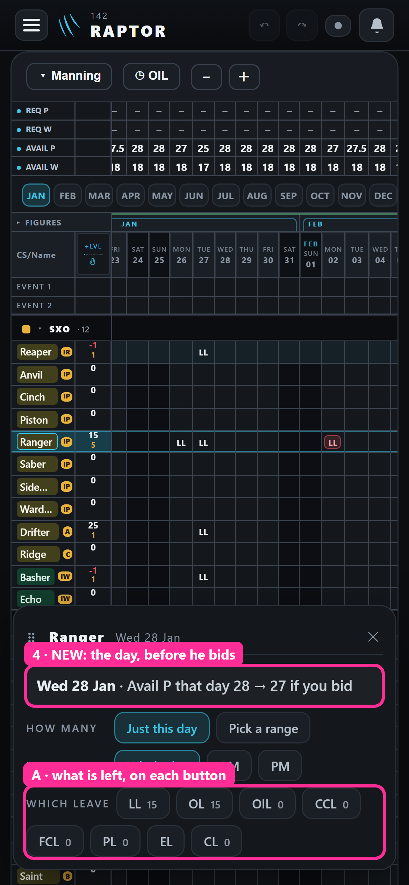
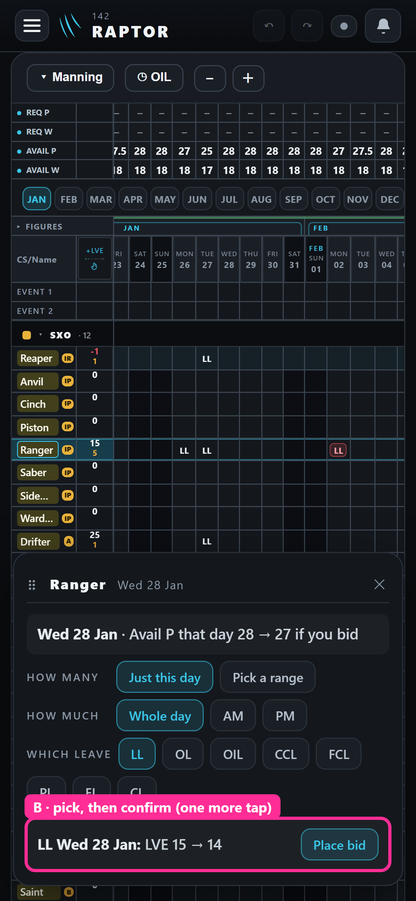
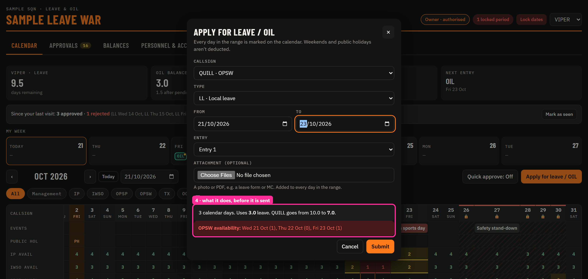
"What if there are more counters at the top?"
I gave the squadron eleven manning counters (the eleven the app used to start with) and placed a real bid for Ranger on Wed 28 Jan to measure it. That one bid moves five of the eleven: IP 16 → 15, IP + IWSO 23 → 22, flight-lead pilots 19 → 18, SXO 12 → 11, SC Day 7.7 → 7.5. None of them turns amber or red. Three ways to show that on the bid window's top line:
- A · Every counter
All eleven, with the five that move shown "before → after". Four lines of text on a phone, and it grows with every counter you add. - A2 · Only the counters the bid moves
The five, each "before → after". Three lines here; still grows with more counters. - A3 · Only a counter the bid turns amber or redrecommended
Usually one calm line: "Avail P 28 → 27 · no manning row turns amber or red". If the bid would turn a row amber or red, that row is named, in its colour: "SXO 2 → 1". The full counters are still right above, in the Manning rows. It stays short however many counters you have.
In all three, what's left on each leave button stays as you chose in A.
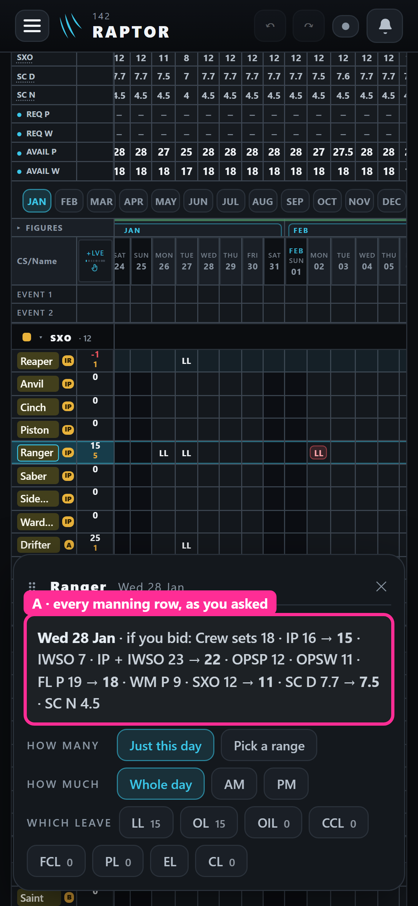
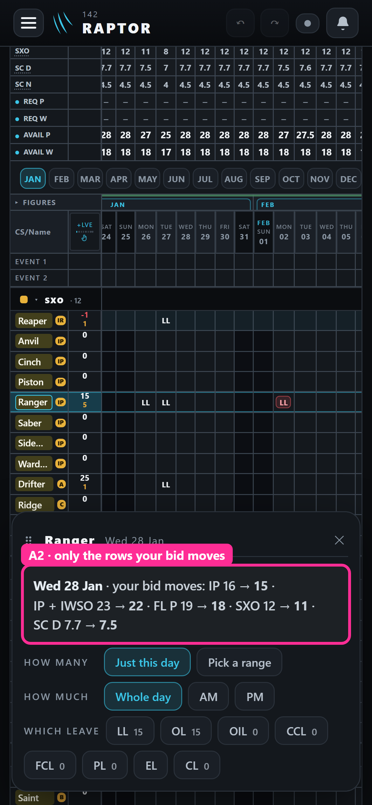
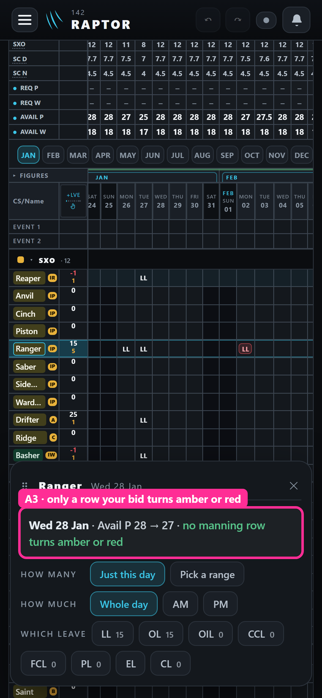
Your answer: A3, each counter flushed left. Below, three counters turned at once, each on its own line with the figures lined up. These are the real numbers from Ranger's bid; I raised three counters' limits only for this picture, so they show amber and red. With one counter turned it stands on its own line the same way, and with none the line says so.
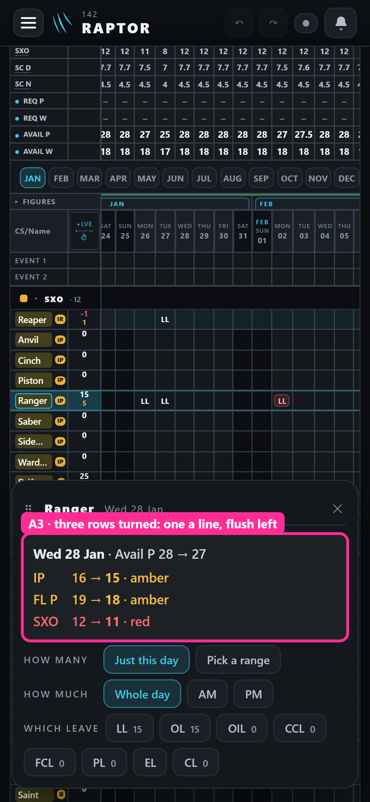
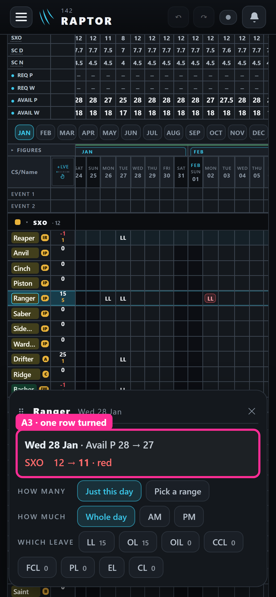
1A 2A 3A 4A, or "as recommended". Add a word on anything you'd like changed.
What comes after this round
Round 2 · your side
A list of every waiting request with Approve on each line · "approve all that turn no day red" · what a No Leave day does to a member's bid (you chose "colours only", so urgent leave still goes through; I'll ask whether it should at least ask first) · an entry approved as you place it · who placed a bid and when · photos of leave forms (recommended: not until the database).
Round 3 · finding things
A "Show" filter: one group, or people with leave in the bidding window · sorting by flight (your idea from 18 Oct) · a way to jump to today · whether cells keep colour by decision (recommended) or take theirs' colour per leave type.
Round 4 · balances and manning
Leave balances per year and carry-over (your "next time" from 19 Sep) · whether a whole-day Training or Duty lowers manning (you parked it "for now" until the Leave War's next batch, and this is that batch).
What we're not taking, and why
- Already ours, often more: manning rows with amber and red (ours are yours to define) · everyone's balances (ours show one figure, already less what's waiting) · half days and two records a day · dragging across days · event bars · locking members out once bidding closes.
- You've ruled it: editing people on the Leave War (that stays on Quals) · one month at a time (the year grid stays) · a pop-up note after every action.
- Left out: "Quick approve" (it's easy to leave on, and then a tap meant to open a cell approves it) · one-press national holidays (a list that must be kept right every year) · the colour key always under the grid (a phone screen of height every visit) · their orange look.